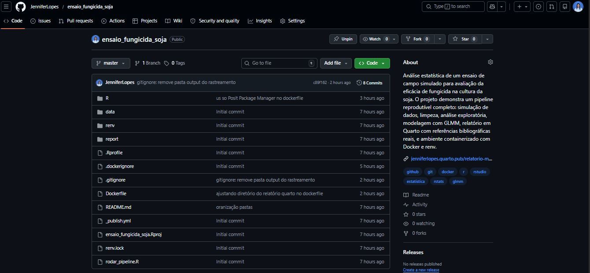
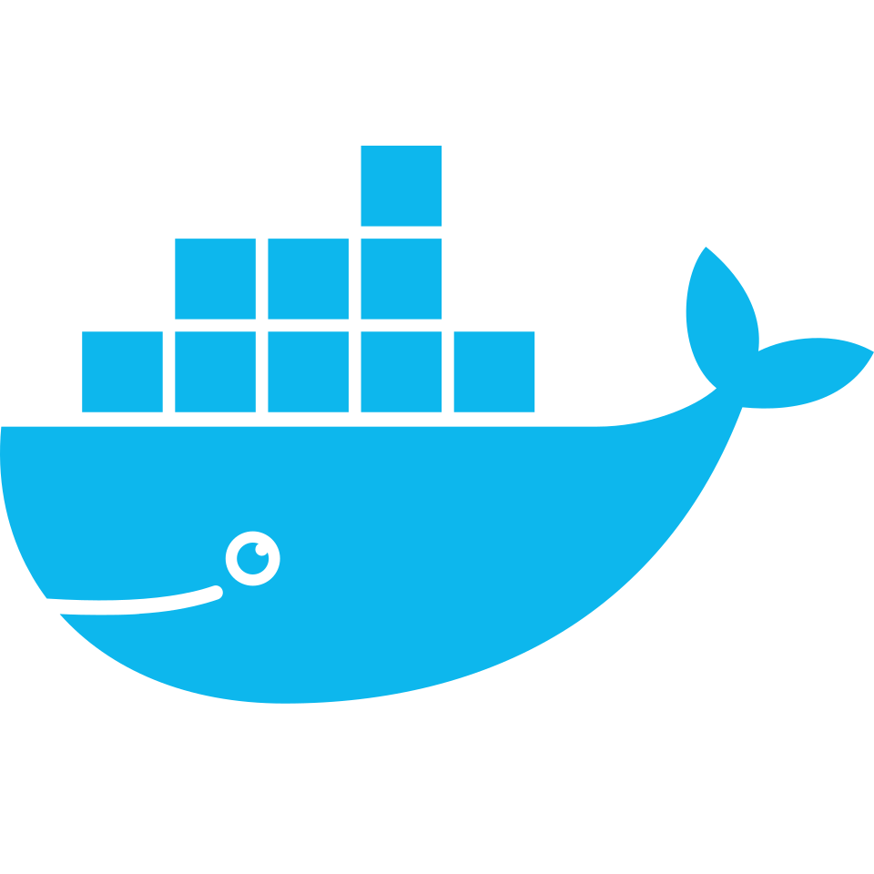
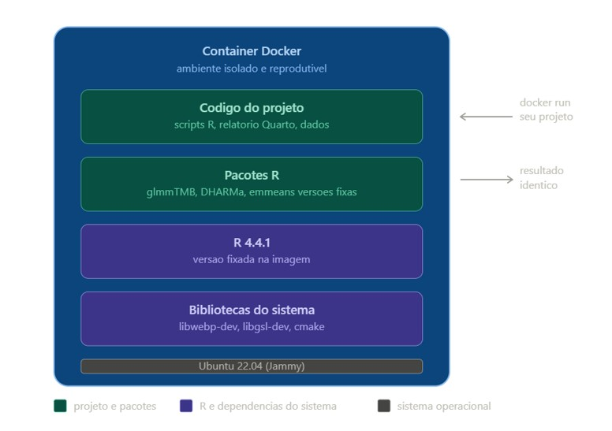
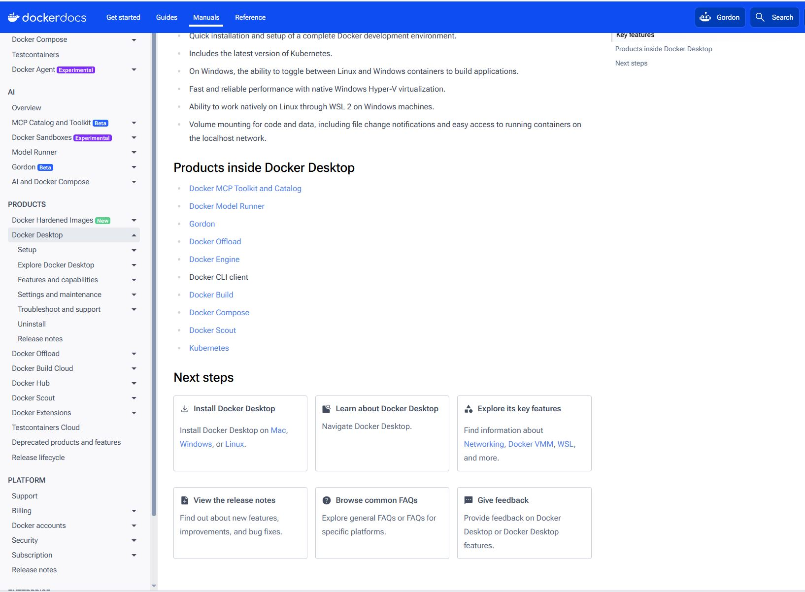
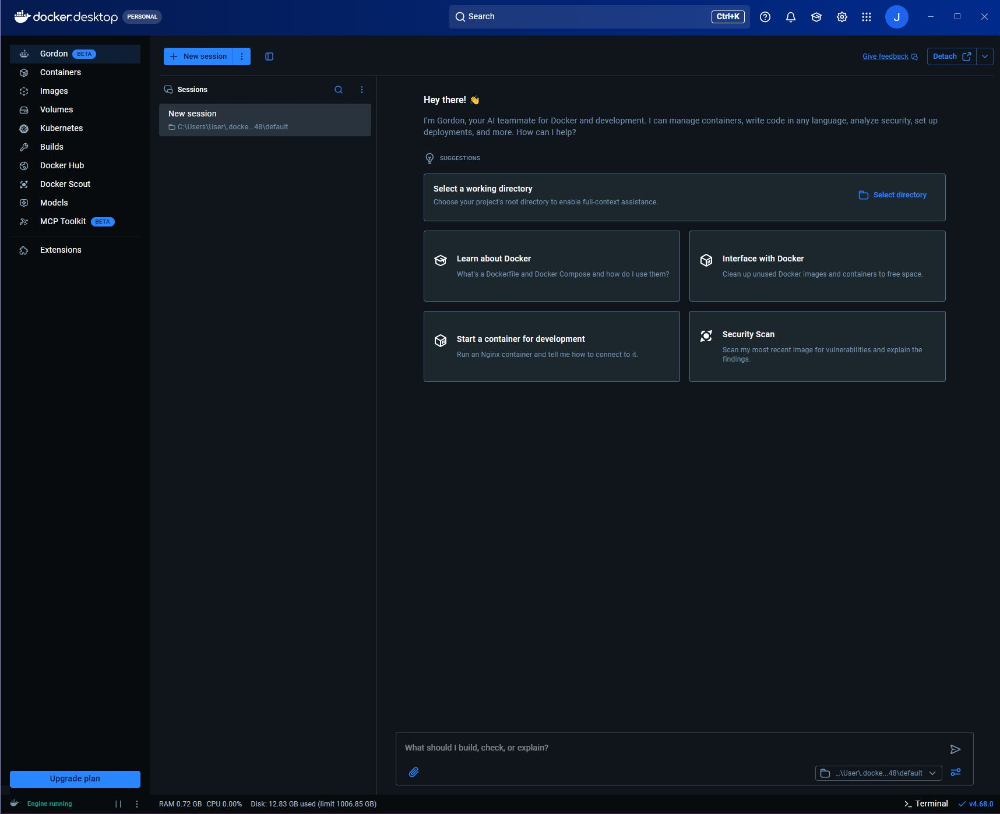
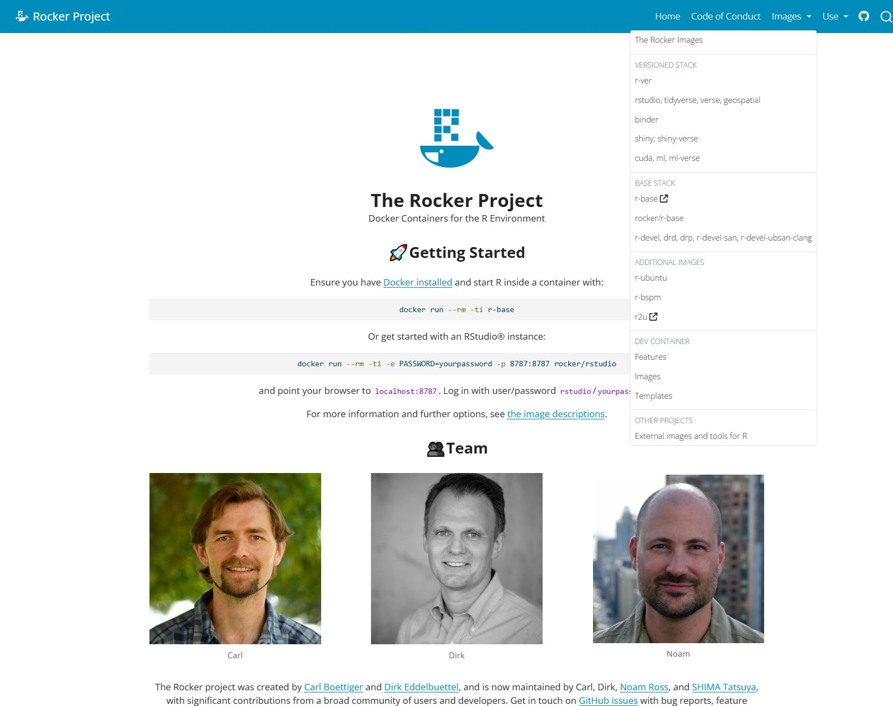

Aula 17. Docker para Pesquisadores, Analistas, Cientistas, Estudantes …
A aplicação é em R, mas os conceitos são universais!
Acompanhe o Café com R

Printa a tela e escaneia o QR Code.
EM BREVE - NO YOUTUBE

Inscreva-se já no Link.
Antes de começar:
- Projeto para usar essa aula está no meu repositório do
GitHub. - No final da apresentação tem uma lista de conceitos, para fixar o conhecimento.
- Essa aula foi feita com R + RStudio utilizando o Quarto. 💜

Todos as mensagens, avisos e dicas foram documentadas por mim, por alguns erros que já cometi por aqui.
Só mais uma ressalva antes do conteúdo: Docker não é só para Engenheiro de Dados

Se você já passou por alguma dessas situações, Docker é para você:
Seu código parou de funcionar depois de uma atualização de pacote
Um colega não conseguiu rodar sua análise na máquina dele
Você trocou de computador e perdeu horas reconfigurando o ambiente
Seu orientador pediu para replicar uma análise feita meses atrás e os resultados eram diferentes
Pesquisadores, analistas, cientistas e estudantes lidam diariamente com o risco de perder reprodutibilidade. Docker elimina esse risco empacotando o R, os pacotes e o ambiente junto com o projeto.
O código que você compartilha sem o ambiente não é totalmente reproduzível. Docker fecha essa lacuna.
O que é Docker

Conceito
Dockeré uma plataforma de código aberto que permite empacotar, distribuir e executar aplicações em ambientes isolados chamados containers.
Um container reúne tudo o que uma aplicação precisa para funcionar:
O sistema operacional base, as dependências do sistema, as bibliotecas, os pacotes e o código.
Isso garante que o ambiente de execução seja sempre idêntico, independente da máquina onde o container é rodado.
O problema que o Docker resolve
Você desenvolveu uma análise com R 4.4.1,
glmmTMB1.1.14 eggplot24.0.2.Envia para um colega. Ele abre com R 4.3.0 e versões diferentes dos pacotes. O código quebra.
O
{renv}registra as versões dos pacotes RMas não controla a versão do R em si
Nem as dependências do sistema operacional
Nem as bibliotecas C instaladas no Linux
O Docker resolve tudo isso de uma vez.
O que é um container
Um container é um ambiente isolado e completo que empacota:
- o sistema operacional base
- a versão do R
- todos os pacotes R com suas versões exatas
- as bibliotecas do sistema operacional necessárias
- o código do projeto
O que é um container

Quando você roda um container Docker, o resultado é sempre idêntico, independente de qual máquina está sendo usada.
Container x máquina virtual
Um container não é o mesmo que uma máquina virtual.
Uma máquina virtual emula um computador inteiro, incluindo hardware, e consome recursos pesados de CPU e memória.
Um container compartilha o kernel do sistema operacional da máquina host e isola apenas o que é necessário para a aplicação.
O resultado é um ambiente isolado muito mais leve, que inicia em segundos e ocupa menos espaço em disco.
Um container
Dockerempacota oR, os pacotes, as versões e o código juntos. Qualquer pessoa que rodar esse container terá exatamente o mesmo ambiente, independente do sistema operacional da máquina dela. É reprodutibilidade garantida sem depender de instalação manual.
O pacote renv - O que é e para que serve?
O renv é um pacote de gerenciamento de ambientes em R. Ele registra e isola as versões exatas dos pacotes utilizados em um projeto, garantindo que o ambiente seja reproduzível por qualquer pessoa, em qualquer máquina.
Por que isso importa?
- Pacotes do R são atualizados com frequência
- Uma função que funciona hoje pode se comportar de forma diferente em uma versão futura
- Sem controle de versão de pacotes, a análise deixa de ser reproduzível
O que o renv faz na prática:
- Cria uma biblioteca de pacotes isolada por projeto
- Registra as versões exatas em um arquivo
renv.lock - Permite restaurar o ambiente completo com um único comando
O
renv.locké o equivalente dorequirements.txtdo Python para o R.
renv - Exemplo mínimo e uso em projetos
Instalação e inicialização
Fluxo de trabalho em um projeto
Arquivos gerados pelo renv no projeto
| Arquivo / Pasta | Função |
|---|---|
renv.lock |
Registra versões exatas dos pacotes |
renv/ |
Biblioteca isolada do projeto |
.Rprofile |
Ativa o renv automaticamente ao abrir o projeto |
Commitar o
renv.lockno GitHub garante que qualquer pessoa consiga restaurar o ambiente exato do projeto comrenv::restore().
Docker x renv: quando usar cada um
| Situação | Ferramenta |
|---|---|
| Controlar versões de pacotes R | {renv} |
| Reprodutibilidade total do ambiente | Docker |
| Compartilhar análise com qualquer pessoa | Docker |
| Desenvolvimento do dia a dia | {renv} |
| Entrega final do pipeline | Docker |
Dica
O ideal é usar os dois juntos: {renv} no desenvolvimento e Docker na entrega final.
Docker no Windows x Linux
| Aspecto | Windows | Linux |
|---|---|---|
| Camada de virtualização | WSL2 (overhead) | Nenhuma |
| Velocidade de compilação | Mais lenta | Mais rápida |
| Instalação | Docker Desktop obrigatório | Serviço do sistema |
| Estabilidade em builds longos | Instável | Estável |
Importante
Builds que levam 60 minutos no Windows podem levar 10 a 20 minutos no Linux. Para uso profissional contínuo, Linux é o ambiente mais adequado.
Instalação
Como instalar o Docker Desktop
- Acesse https://docs.docker.com/desktop/ e baixe a versão para o seu sistema operacional.

Como instalar o Docker Desktop
- Após instalar, abra o Docker Desktop.
- Ele precisa estar aberto e rodando em segundo plano sempre que você for usar o Docker pelo terminal.
Para confirmar que a instalação funcionou, abra o terminal e rode:
A saída deve ser algo como:
Docker version 27.0.3, build 7d4bcd8O que é o Docker Desktop
O Docker Desktop é a interface gráfica do Docker. Os comandos vão no terminal, não aqui. O Docker Desktop serve para:
- Iniciar e parar o engine do Docker
- Monitorar imagens e containers
- Ver logs de execução
- Configurar recursos de memória e CPU
- Verificar se o engine está rodando
Dica
O indicador mais importante é o status no canto inferior esquerdo. Engine running em verde significa que o Docker está pronto para uso.
Docker Desktop

Abas do Docker Desktop
- Images
- Lista todas as imagens que você já baixou ou construiu. Cada imagem tem um nome, tag de versão e tamanho em disco. A imagem
rocker/tidyverse:4.4.1ocupa cerca de 2 GB.
- Containers
- Lista os containers que estão rodando ou que já rodaram. Com
--rmnodocker run, o container é removido automaticamente após terminar.
- Volumes
- Lista os volumes persistentes criados. Volumes temporários via
-vnodocker runnão aparecem aqui.
Configuração importante: Resource Saver
O Resource Saver reduz o uso de CPU e memória quando nenhum container está rodando.
Aviso
Na configuração padrão, o Resource Saver entra em modo de economia em apenas 30 segundos. Durante um build longo, isso cancela o processo no meio com o erro context canceled.
Para desativar:
- Abra o Docker Desktop
- Vá em Settings > Resources > Advanced
- Desmarque Enable Resource Saver
- Clique em Apply
A imagem base: rocker/tidyverse
O que é uma imagem base
Uma imagem Docker é como um molde. Ela contém um sistema operacional e um conjunto de softwares pré-instalados.
Quando você constrói uma imagem para o seu projeto, você parte de uma imagem base e adiciona o que precisa.
O Docker Hub é o repositório público de imagens. É de lá que o Docker baixa a imagem base quando você roda
docker pullou quando o build começa.
O que é o rocker/tidyverse
- O projeto Rocker mantém imagens Docker oficiais para
R, construídas sobreUbuntuLinux.

rocker/tidyverse
A imagem rocker/tidyverse:4.4.1 inclui:
- Ubuntu 22.04 (Jammy)
- R 4.4.1
- RStudio Server
- Tidyverse completo pré-instalado
- Pandoc e Quarto CLI
- Dependências de sistema para os principais pacotes R
Importante
A tag :4.4.1 é obrigatória. Sem ela, o Docker usa latest, que muda com o tempo e quebra a reprodutibilidade.
Comparação entre imagens Rocker
| Imagem | Conteúdo | Indicada para |
|---|---|---|
rocker/r-base |
Apenas R | Projetos mínimos |
rocker/tidyverse |
R + Tidyverse + Quarto | Análise de dados |
rocker/verse |
Tidyverse + LaTeX | Projetos com PDF |
rocker/geospatial |
Tidyverse + bibliotecas espaciais | Análises espaciais |
Dica
Para projetos de análise estatística com relatório em Quarto, o rocker/tidyverse é a escolha mais adequada.
O Dockerfile
O que é o Dockerfile
O Dockerfile é um arquivo de texto simples, sem extensão, com as instruções para construir a imagem do projeto.
- O Docker lê de cima para baixo
- Cria uma camada para cada instrução
- Se você alterar uma instrução, só as camadas a partir daquele ponto são reconstruídas
- As camadas anteriores ficam em cache
Dica
A ordem das instruções importa. Coloque o que muda menos no início e o que muda com frequência no final.
Estrutura completa do Dockerfile
FROM rocker/tidyverse:4.4.1
LABEL maintainer="Jennifer Luz Lopes"
LABEL description="Ensaio de eficacia de fungicida em soja"
RUN apt-get update && apt-get install -y \
libgsl-dev libglpk-dev libxml2-dev \
libcurl4-openssl-dev libssl-dev \
libwebp-dev libnode-dev cmake pandoc \
&& apt-get clean \
&& rm -rf /var/lib/apt/lists/*
RUN Rscript -e " \
options(repos = c(CRAN = 'https://packagemanager.posit.co/cran/__linux__/jammy/latest')); \
install.packages(c('glmmTMB','DHARMa','emmeans','multcomp','broom.mixed','gt','DT','renv'), Ncpus = 4)"
WORKDIR /project
COPY . /project
RUN mkdir -p output/figuras output/tabelas output/modelos
RUN Rscript R/01_simular_dados.R && Rscript R/02_limpar_dados.R && \
Rscript R/03_eda.R && Rscript R/04_analise_glmm.R
RUN quarto render report/relatorio.qmd --output-dir output/ --execute-dir /project
CMD ["bash"]Instrução FROM
Define a imagem base. Toda imagem Docker parte de outra imagem.
Aviso
Nunca use FROM rocker/tidyverse sem a tag de versão. Sem a tag, o Docker usa latest, que muda com o tempo e quebra a reprodutibilidade.
Instrução LABEL
- Metadados da imagem. Não afetam o funcionamento, servem apenas para documentação.
Aparecem quando você roda:
Instrução RUN para dependências do sistema
RUN apt-get update && apt-get install -y \
libgsl-dev libwebp-dev libnode-dev cmake \
&& apt-get clean \
&& rm -rf /var/lib/apt/lists/*Instala bibliotecas do sistema operacional (Ubuntu).
Muitos pacotes
Rdependem de bibliotecasCpara compilar. Sem elas, a instalação do pacote R falha.
Dica
O apt-get clean e o rm -rf /var/lib/apt/lists/* removem o cache do apt para reduzir o tamanho final da imagem.
Por que encadear os comandos com &&
Cada instrução RUN cria uma camada na imagem.
# Ruim: três camadas separadas
RUN apt-get update
RUN apt-get install -y libgsl-dev
RUN apt-get clean
# Bom: uma única camada
RUN apt-get update && apt-get install -y \
libgsl-dev \
&& apt-get clean \
&& rm -rf /var/lib/apt/lists/*Dica
Encadear com && mantém tudo em uma única camada, reduzindo o tamanho da imagem.
Instrução RUN para pacotes R
RUN Rscript -e " \
options(repos = c(CRAN = 'https://packagemanager.posit.co/cran/__linux__/jammy/latest')); \
install.packages(c('glmmTMB','DHARMa','emmeans'), Ncpus = 4)"options(repos = ...)define o repositório do Posit Package Manager- O Posit Package Manager fornece binários pré-compilados para Ubuntu Jammy
- Sem ele, o R compila do código fonte em C++, o que pode levar mais de 60 minutos
- Com ele, a instalação de 167 pacotes leva cerca de 2 minutos
Aviso
Nunca inclua 'quarto' nessa lista. O pacote R quarto tenta compilar TypeScript e trava o build. O Quarto CLI já vem pré-instalado na imagem rocker/tidyverse.
Instruções WORKDIR, COPY e mkdir
WORKDIR:define o diretório de trabalho dentro do containerCOPY . /project:copia os arquivos do seu computador para dentro do containermkdir -p:cria as pastas de saída antes de rodar os scripts
Dica
O .dockerignore controla quais arquivos o COPY inclui. Sem ele, a pasta renv/library/ inteira seria copiada, causando o erro context canceled.
Instrução RUN para rodar o pipeline
RUN Rscript R/01_simular_dados.R && \
Rscript R/02_limpar_dados.R && \
Rscript R/03_eda.R && \
Rscript R/04_analise_glmm.RExecuta os scripts R em sequência. Se qualquer script falhar, o build para.
Instrução RUN para renderizar o relatório
--output-dir output/:define onde o HTML será salvo--execute-dir /project:define o diretório de trabalho durante a execução do R
Importante
O parâmetro --execute-dir é obrigatório quando o .qmd está em uma subpasta. Sem ele, o R procura os arquivos de dados relativos à pasta report/ e não encontra data/processed/dados_limpos.csv.
Instrução CMD
Define o comando padrão executado quando o container inicia.
bashabre um terminal interativo dentro do container, útil para depuração.
Dica
Para copiar arquivos gerados dentro do container para sua máquina, use docker cp em vez de tentar usar o terminal interativo com CMD.
O arquivo .dockerignore
O que é o .dockerignore
O
.dockerignorefunciona igual ao.gitignore, mas para o Docker.Lista arquivos e pastas que não devem ser copiados para dentro do container.
renv/library/
renv/local/
renv/cellar/
renv/staging/
data/
output/
.git/
.Rproj.user/
*.RprojAviso
A pasta renv/library/ é a mais crítica. Ela contém os pacotes instalados localmente e pode ter mais de 500 MB. Sem o .dockerignore, o Docker tenta copiar tudo e cancela com o erro context canceled.
Comandos essenciais
docker pull
Baixa uma imagem do Docker Hub sem construir nada.
Dica
Faça o docker pull da imagem base antes do docker build em conexões instáveis. O Docker retoma de onde parou se o download for interrompido. Quando a imagem já está baixada, o comando retorna Status: Image is up to date.
docker build
Constrói a imagem a partir do Dockerfile na pasta atual.
-t ensaio-fungicidadefine o nome da imagem.indica que o Dockerfile está no diretório atual
Dica
O build pode demorar entre 5 e 15 minutos usando o Posit Package Manager com binários pré-compilados. Nas próximas vezes é mais rápido porque as camadas ficam em cache.
docker run
# Linux e Mac
docker run --rm -v $(pwd)/output:/project/output ensaio-fungicida
# Windows PowerShell
docker run --rm -v ${PWD}/output:/project/output ensaio-fungicida
# Windows com caminho explícito
docker run --rm -v "C:/caminho/do/projeto/output":/project/output ensaio-fungicida--rmremove o container automaticamente após terminar-vconecta uma pasta do seu computador com uma pasta dentro do container
docker create e docker cp
- Quando o volume
-vnão funcionar corretamente, use este método para copiar os arquivos gerados:
# Criar container sem rodar
docker create --name temp ensaio-fungicida
# Copiar arquivos do container para a máquina
docker cp temp:/project/output .
# Remover o container temporário
docker rm tempDica
Para copiar um arquivo específico, informe o caminho completo dentro do container. Use docker run --rm ensaio-fungicida find //project -name "*.html" para localizar o arquivo antes de copiar.
docker images, ps e rmi
Usando um projeto Docker em outra máquina
Passo a passo completo
1. Instalar o Docker Desktop e verificar Engine running
2. Clonar o repositório:
3. Baixar a imagem base:
4. Construir a imagem:
5. Copiar os arquivos gerados:
O que acontece em cada etapa do build
Quando você roda docker build, o Docker executa estas etapas na ordem:
- Lê o Dockerfile linha a linha
- Baixa a imagem base se ainda não estiver na máquina
- Instala as dependências do sistema com
apt-get - Instala os pacotes R com
install.packages - Copia os arquivos do projeto para dentro do container
- Cria as pastas de saída
- Executa os scripts R em sequência
- Renderiza o relatório Quarto
- Exporta e salva a imagem final
Erros comuns e como resolver
Erro 1: context canceled (Resource Saver)
Mensagem:
ERROR: failed to build: failed to solve: Canceled: context canceledCausa: O Resource Saver do Docker Desktop entrou em modo de economia durante o build.
Solução:
- Abra Docker Desktop
- Vá em Settings > Resources > Advanced
- Desmarque Enable Resource Saver
- Clique em Apply e rode o build novamente
Erro 1: context canceled (renv/library/)
Causa: A pasta renv/library/ está sendo copiada para o container por falta do .dockerignore.
Solução: Criar o arquivo .dockerignore na raiz do projeto com o conteúdo:
renv/library/
renv/local/
renv/cellar/
renv/staging/
data/
output/
.git/
.Rproj.user/
*.RprojDica
No terminal do RStudio, crie o arquivo com usethis::use_git_ignore() ou crie manualmente na raiz do projeto.
Erro 2: biblioteca do sistema ausente
Mensagem:
libwebpmux.so.3: cannot open shared object file: No such file or directory
Error: error testing if 'ragg' can be loadedCausa: Um pacote R depende de uma biblioteca do sistema que não está instalada na imagem.
Solução: Adicionar a biblioteca no bloco apt-get install do Dockerfile.
| Pacote R | Biblioteca necessária |
|---|---|
ragg |
libwebp-dev |
V8 |
libnode-dev |
nloptr, fs |
cmake |
xml2 |
libxml2-dev |
openssl |
libssl-dev |
Erro 3: pacote quarto travando o build
Mensagem:
make: *** [Makefile:239: quarto.ts] Error 1Causa: O pacote R quarto tenta compilar TypeScript durante a instalação, o que falha na imagem rocker/tidyverse.
Solução: Remover 'quarto' da lista do install.packages no Dockerfile.
Importante
O Quarto CLI já vem pré-instalado na imagem rocker/tidyverse e pode ser chamado diretamente com quarto render no Dockerfile. O pacote R quarto não é necessário dentro do container.
Erro 4: build longo com compilação do código fonte
Sintoma: O build fica parado por 40 a 60 minutos na etapa de instalação de pacotes, especialmente glmmTMB e TMB, mostrando mensagens de compilação C++ como:
../inst/include/Eigen/src/Core/ProductEvaluators.h:380:62
[output clipped, log limit 2MiB reached]Causa: O repositório CRAN padrão não fornece binários para Linux, forçando compilação do código fonte.
Solução: Usar o Posit Package Manager no Dockerfile:
Erro 5: Docker Desktop travado
Mensagem:
ERROR: request returned 500 Internal Server Error for API route
http://%2F%2F.%2Fpipe%2FdockerDesktopLinuxEngine/_pingCausa: O Docker Desktop travou após um build muito longo ou após ser interrompido forçadamente.
Solução:
- Clique com o botão direito no ícone do Docker Desktop na barra de tarefas
- Escolha Quit Docker Desktop
- Aguarde 30 segundos
- Abra o Docker Desktop novamente
- Aguarde Engine running e rode o build novamente
Erro 6: arquivo HTML gerado no caminho errado
Mensagem:
Error: 'data/processed/dados_limpos.csv' does not exist in current
working directory: '/project/report'Causa: O Quarto executa o .qmd a partir da pasta onde ele está (report/), e os caminhos relativos como data/processed/ ficam incorretos.
Solução: Adicionar --execute-dir no comando de renderização do Dockerfile:
Dica
Para encontrar onde o HTML foi gerado dentro do container, use: docker run --rm ensaio-fungicida find //project -name "*.html"
Erro 7: volume não mapeado corretamente no Windows
Sintoma: Uma pasta estranha como output;C é criada no projeto, ou o relatório não aparece na pasta output/.
Causa: O Git Bash no Windows converte automaticamente caminhos como /project para C:/Program Files/Git/project.
Solução: Use o caminho completo entre aspas ou use docker cp:
Boas práticas
Sequência recomendada antes de dockerizar
Importante
Sempre teste o pipeline localmente antes de criar o Dockerfile. O Docker não facilita a depuração de erros nos scripts R. É muito mais rápido encontrar e corrigir um erro no RStudio do que dentro de um build.
- Desenvolver e testar todos os scripts localmente
- Garantir que o relatório renderiza sem erros
- Rodar
renv::snapshot()para registrar os pacotes - Criar o
.dockerignore - Criar o Dockerfile
- Rodar o
docker pullda imagem base - Rodar o
docker build
Estratégia para builds mais rápidos
Organize as instruções do Dockerfile da menos para a mais frequente:
# Muda raramente: fica no início
FROM rocker/tidyverse:4.4.1
RUN apt-get install ...
# Muda às vezes: fica no meio
RUN install.packages(...)
# Muda com frequência: fica no final
COPY . /project
RUN Rscript ...Dica
Se você só mudar um script R, o Docker usa o cache das etapas anteriores e só reexecuta a partir do COPY. O build fica muito mais rápido.
Checklist antes do docker build
Antes de rodar o build, confirme cada item:
- O Docker Desktop está aberto e com status Engine running
- O Resource Saver está desativado
- O
.dockerignoreexiste e incluirenv/library/ - O pipeline roda sem erros localmente
- O
renv.lockestá atualizado comrenv::snapshot() - O Dockerfile usa o Posit Package Manager como repositório
- O Dockerfile não inclui
'quarto'na lista doinstall.packages - O comando
quarto renderinclui--execute-dir /project
Conceitos
1. Ambiente de execução: O conjunto de tudo que um código precisa para rodar: sistema operacional, linguagem instalada, pacotes e suas versões. Dois ambientes diferentes podem produzir resultados diferentes com o mesmo código.
2. Reprodutibilidade: Capacidade de replicar exatamente uma análise em qualquer máquina, por qualquer pessoa, em qualquer momento. É o princípio que justifica o uso do Docker em projetos de dados.
3. Dependência: Qualquer pacote, biblioteca ou ferramenta que o código precisa para funcionar. Dependências têm versões, e versões diferentes podem gerar comportamentos diferentes.
4. Imagem Docker: Um arquivo estático que contém o sistema operacional, o R, os pacotes e o código do projeto. É o molde a partir do qual os containers são criados. Uma imagem não executa nada, ela define o ambiente.
Conceitos
5. Container: Uma instância em execução de uma imagem. É o ambiente isolado onde o código de fato roda. Leve, rápido e descartável. Vários containers podem ser criados a partir da mesma imagem.
6. Dockerfile: O arquivo de texto com as instruções para construir uma imagem. Define qual sistema operacional usar, quais pacotes instalar, quais arquivos copiar e qual comando executar ao iniciar o container.
7. Docker Hub: Repositório público de imagens Docker. É onde ficam imagens prontas, incluindo imagens oficiais do R como o rocker/r-ver, que são amplamente usadas em projetos de dados.
8. Volume: Mecanismo que conecta uma pasta do computador local a uma pasta dentro do container. Permite que os arquivos do projeto sejam acessados e salvos fora do container, evitando perda de dados quando o container é encerrado.
Conceitos
9. Build: O processo de construir uma imagem a partir do Dockerfile. É executado uma vez e gera a imagem que será usada para criar containers.
10. rocker: Projeto que mantém imagens Docker oficiais para R. Oferece variantes como rocker/r-ver, rocker/tidyverse e rocker/rstudio, que são pontos de partida para projetos de dados em R sem precisar configurar tudo do zero.
11. renv + Docker: Combinação recomendada para máxima reprodutibilidade. O Docker garante o sistema operacional e a versão do R. O renv garante as versões dos pacotes dentro do container. Juntos, eliminam a variável de ambiente da equação.
Conceitos
12.Kernel: É o núcleo do sistema operacional. Faz a ponte entre o hardware da máquina e os programas que rodam nela. O Docker compartilha o kernel do sistema operacional do host com os containers, o que o torna muito mais leve que uma máquina virtual.
13.Sistema operacional host: É o sistema operacional instalado na sua máquina, seja Windows, macOS ou Linux. O Docker roda sobre ele e compartilha seus recursos.
14.Ubuntu: Distribuição Linux amplamente utilizada em servidores e containers. A maioria das imagens Docker para R, incluindo as do projeto Rocker, é baseada em Ubuntu. Você não precisa saber Linux para usar Docker, mas reconhecer o nome é importante.
15.Máquina virtual: Simula um computador completo com sistema operacional próprio. É pesada, consome muita memória e leva minutos para iniciar. Docker resolve o mesmo problema de isolamento de forma muito mais leve.
Acompanhe o Café com R
Printa a tela e escaneia o QR Code.
EM BREVE - NO YOUTUBE
Inscreva-se já no Link.
Jennifer Lopes | Café com R | Docker para projetos de dados em R